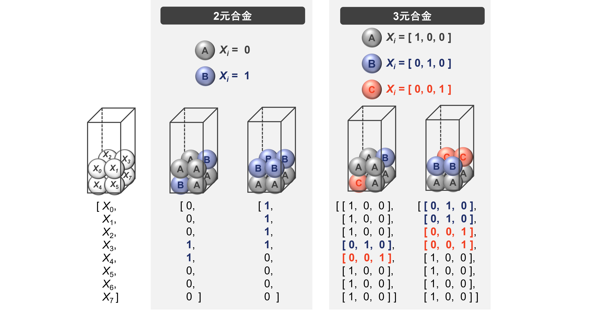
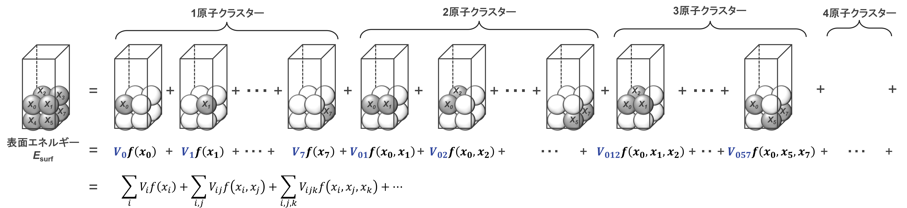
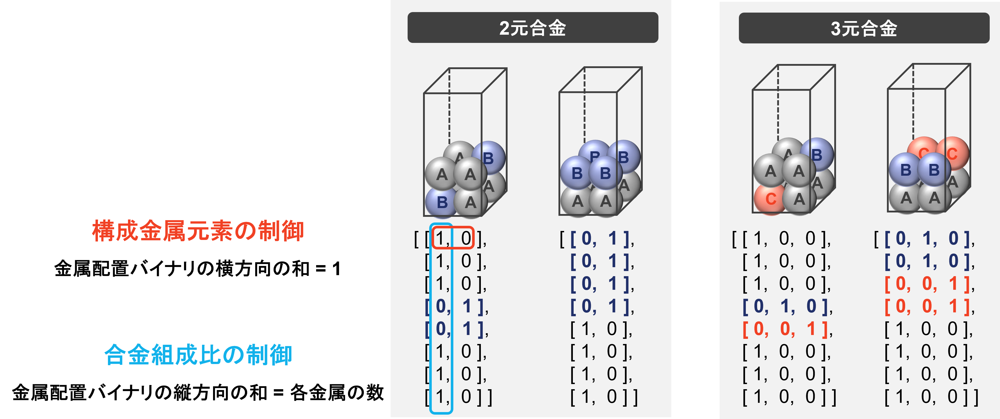

4. 量子アニーリングによる表面モデリング
4.1. 表面モデリングにおける量子アニーリングの適用
表面モデリングをアニーリングマシンで解くためには組合せ最適化問題に落とし込む必要があります。 ここで、表面モデリングは各原子位置にどの元素が入るかの組合せ最適化問題と捉えることができるため、各原子位置における金属種を変数とすることでアニーリングマシンで解くことができる形になります。
実際にアニーリングマシンで表面モデリングを行うためには、1)金属配置の組合せをバイナリ値(0 or 1)で表すことと、2)各金属配置の組合せに対する表面モデルの安定性を関数化すること、の2つが必要になります。
1) 金属配置の組合せのバイナリ化
金属Aと金属Bの2種類からなる2元合金では、ある原子位置に金属Aが入れば0、金属Bが入れば1とすることで金属配置の組合せのバイナリ化ができます。 金属Aと金属Bと金属Cの3種類からなる3元合金では、ある原子位置に金属Aが入れば[1,0,0]、金属Bが入れば[0,1,0]、金属Cが入れば[0,0,1]とすることで金属配置の組合せのバイナリ化ができます。 そのため、多元合金では各原子位置に対して構成金属種の数分の変数を設定することで全ての金属位置の組合せを0と1で表現することができます。
2) 各金属配置の組合せに対する表面モデルの安定性の関数化
表面モデルの安定性は表面エネルギーで評価することができるため、各金属配置の組合せに対する表面エネルギーを関数にすることができればアニーリングマシンで解くことができるようになります。 ここでは、クラスター展開法を利用することで表面エネルギーの関数化を行います。
4.2. クラスター展開法による定式化
クラスター展開法とは系のエネルギーを小さなクラスターのエネルギーの足し合わせで表現する方法です。 今回は合金表面の表面エネルギーを数原子からなるクラスターの足し合わせで記述します。
ここで、Vは各クラスターが全体の合金表面の表面エネルギーに与える影響を表し、クラスター相互作用と呼ばれます。 このクラスター相互作用を求めるためにいくつかの合金表面モデルの表面エネルギーをDFT計算により算出し、pythonのCLEASEパッケージによりクラスター相互作用を回帰して算出することができます。
4.3. アニーリングの実行
クラスター展開法により求めたクラスター相互作用を用いることでアニーリングマシンで解くことができるQUBO式(二次形式の制約なし二値変数最適化式)にします。 このQUBO式を読み込むことでアニーリングを実行することができます。 アニーリングの実行では目的関数が最小となる組合せを探索するため、金属種と合金比率を制御する必要があり、それに向けて制約関数を設定します。 ここでは、ワンホットエンコーディングによる制約を行うことで目的の金属種と合金比率を持つ合金表面のモデリングを行うことができます。
4.4. 結果の出力と理解
SurfQitではアニーリングの実行により得られた表面モデルに対して、X線回折パターン・動径分布関数・触媒性能評価用の吸着モデルを出力することができます。